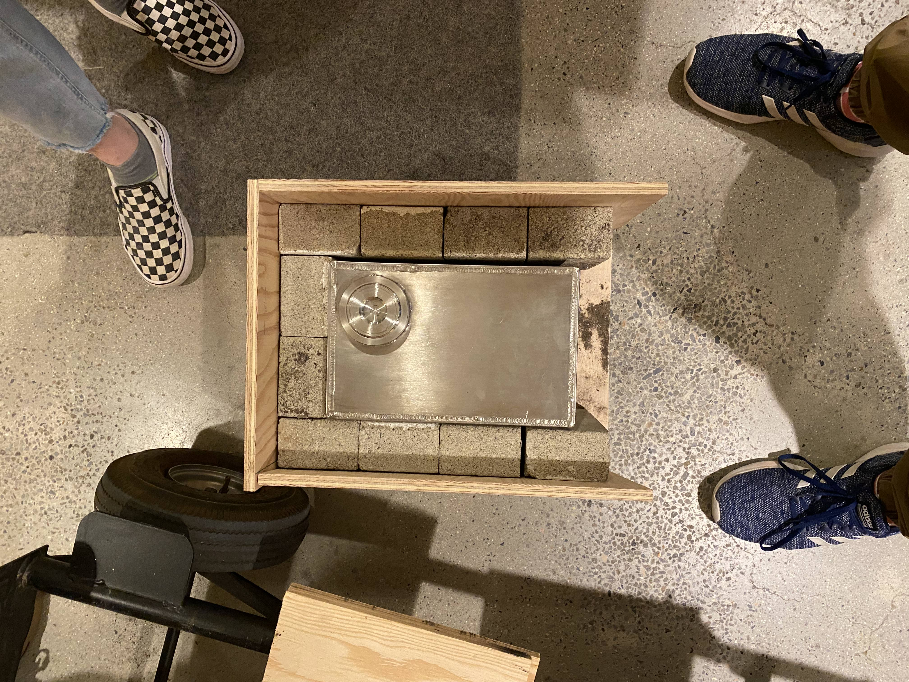
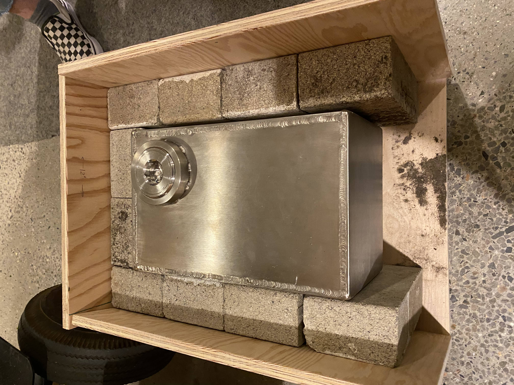
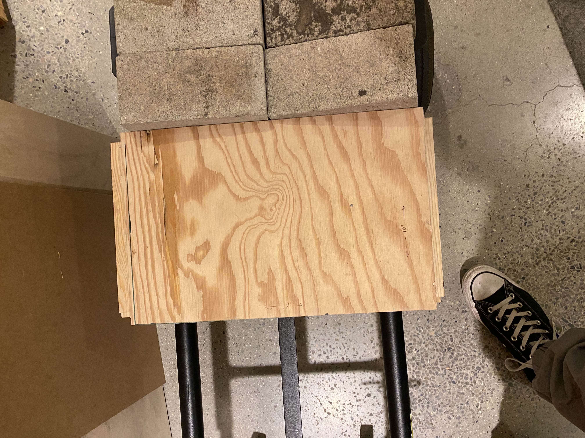
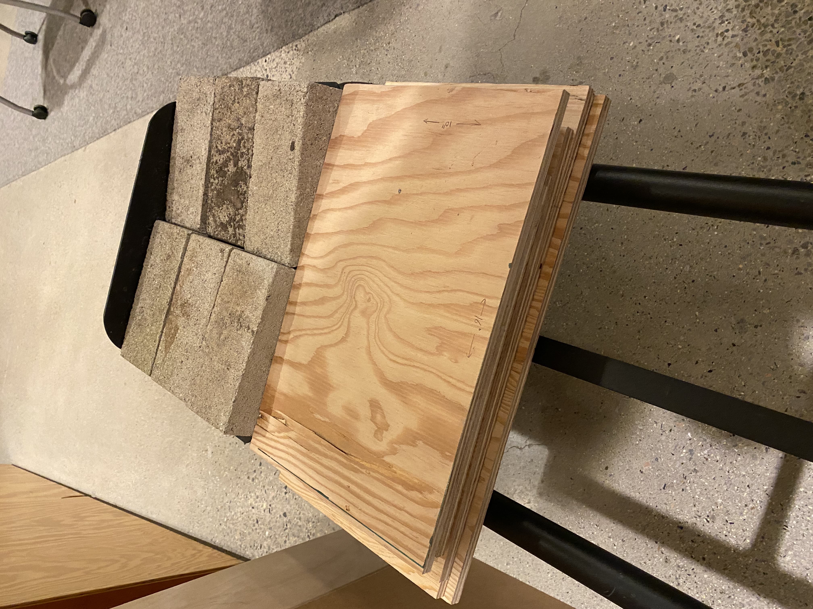

<topbar style="display:none;">
<item><a href="../index.html">Home</a></item>
<item><a href="../about.html">About</a></item>
</topbar>
<style>
a:link {
color: blue;
background-color: transparent;
text-decoration: underline;
}
a:visited {
color: pink;
background-color: transparent;
text-decoration: underline;
}
</style>
## Week 11
<br>
### Design Integration Meeting
<br>
Updated ideas about where the energy collectin surface will be: on one of the ends, not on the bottom of the box.
More experimentation with configurations needed to get a desired configuration of insulation where the bricks conform to the box
as tightly as possible. Looking to see if the frame that has been cut is still suitable. The frame and insulation could look something like this:


Again there is possibly more experimentation needed or brick cutting required to have bricks touching every surface of the salt box
that isn't intentionally exposed.
### In the Shop
The plywood was cut with the bandsaw into pieces big enough to contruct a frame around the salt box and insulating bricks. I also assisted Lucas with
finishing up the heat transfer mechanism prototype. And finally pilot holes were drilled into the sides of the wooden frame pieces so that they
may be screwed together to actually construct the frame. The edges of the wooden pieces were also sanded so as to make them more pleasant to grip and adhere
to one another. Frame to come next week.

